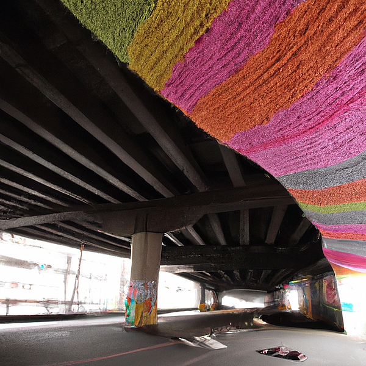
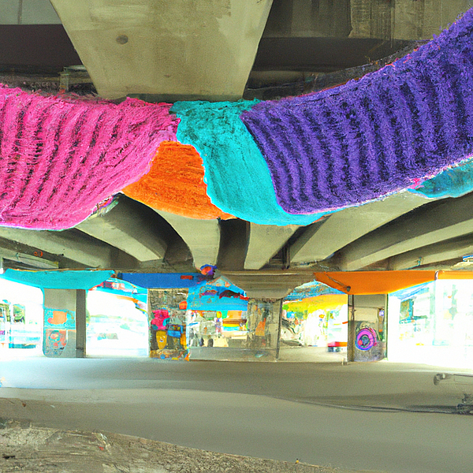
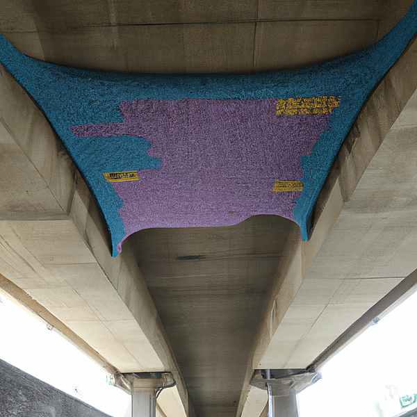

Perlin Noise is an amazing tool that allows you to create stunning visual effects, and for my latest project, I decided to explore the potential of this technology in the realm of emotional well-being. The project is a collective art installation that aims to represent people's brain waves that are responsible for mood. I wanted to create a visual representation of this, to show that even when we feel alone or lost, we are not alone in the way we feel. I wanted to create a tool for collective healing and emotional growth. The idea was to create a live feed of brain wave data that could be translated into visual art, so that visitors to the installation could see a real-time representation of the collective emotional state of the group. To do this, I used a headset that monitors the wearer's brain waves, and then used Perlin Noise to create a visual representation of that data. The end result is a stunning visual display that captures the ebb and flow of collective mood in real-time. The visual effect is a constantly evolving, fluid landscape that shifts and changes with the mood of the group. By creating this installation, I wanted to create a sense of community and connectedness, to show that we are all in this together. The process of creating this installation was incredibly challenging, but also deeply rewarding. I had to learn how to use new technology, and I had to experiment with different techniques to get the desired effect. But in the end, it was all worth it. Seeing the final result, and watching people interact with it, was a truly magical experience. Overall, I believe that this project has the potential to make a real difference in the world. By creating a visual representation of collective emotional states, we can start to build a greater sense of community and empathy, and create a more connected and caring world.
The idea is to create a knitting instalation under a bridge. The patterns of the knitting instalation are gonna be the waves of the brains of people walking under it. The result is going to be showing up on top of the underside of the bridge. The wool is going to be reused constantly to be able to keep it dynamic. How are the waves of people gonna be meassured? With sensors on top of the under side of the bridge (probably doesn't exist). Thanks to the perlin noise we can create smooth waves. Probably the knitting installation is only going to be able to show certain amount of people's waves at the same time (same as my algorithm so far, otherwise it collapses).
  